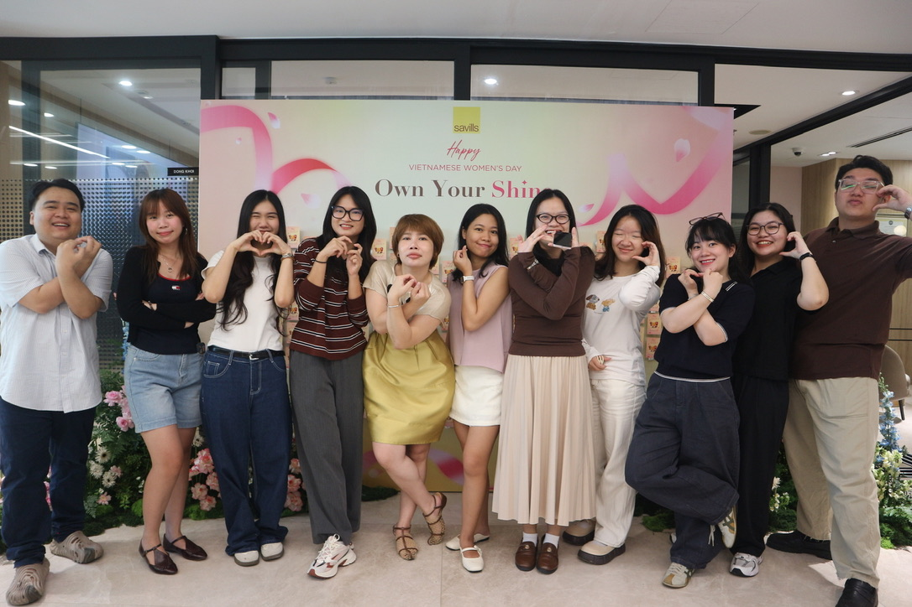
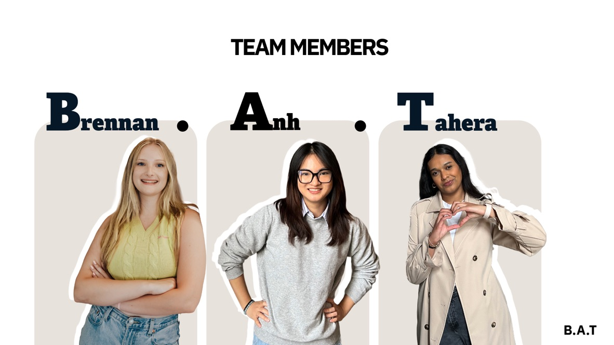
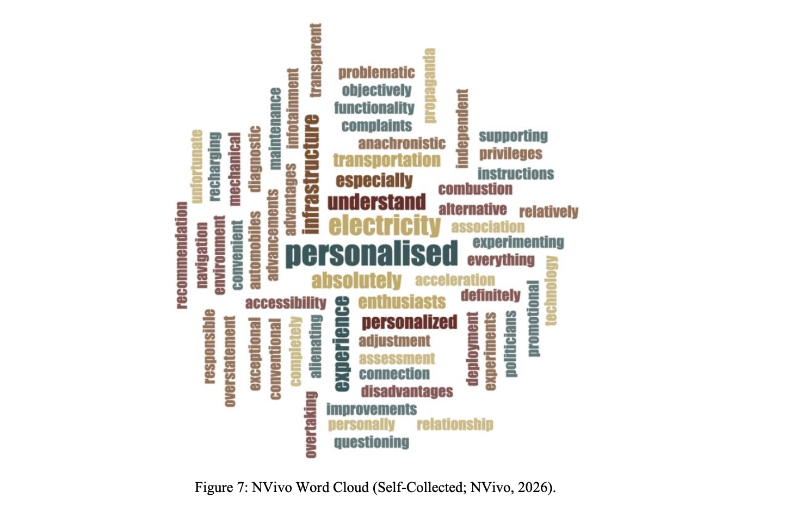
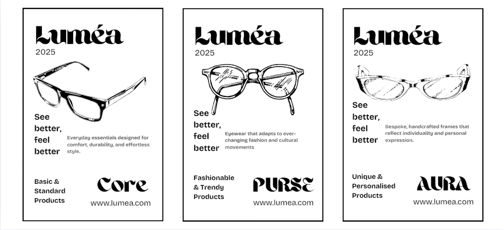
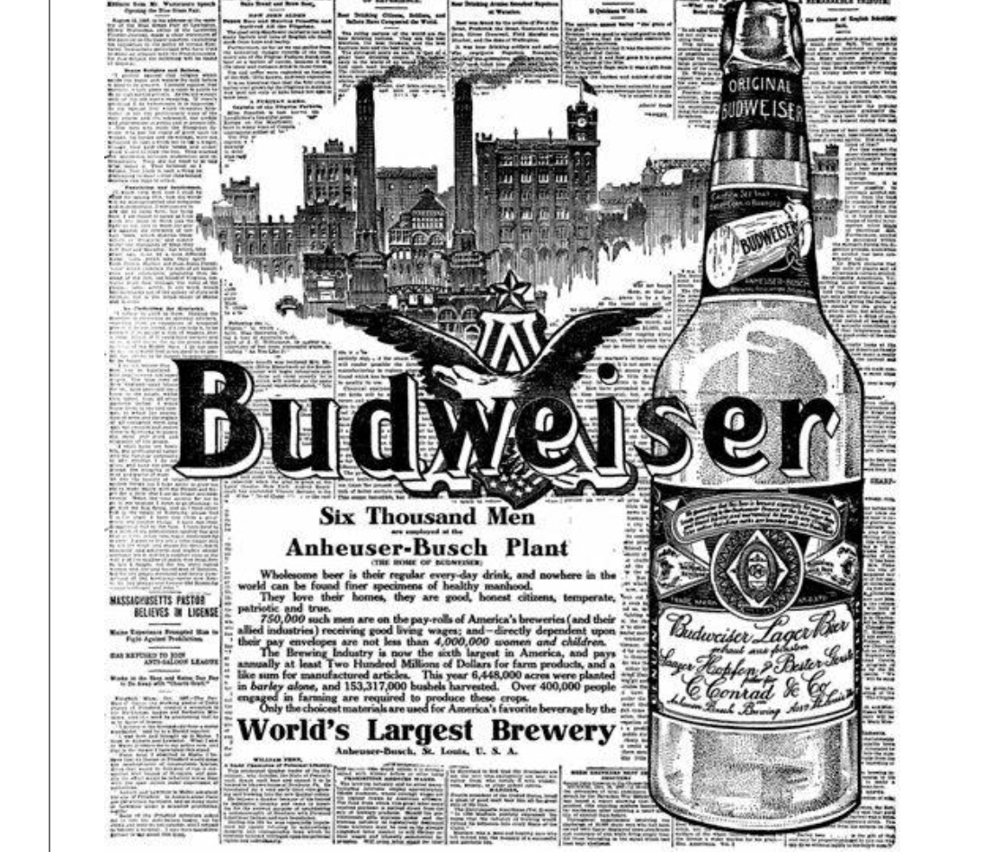
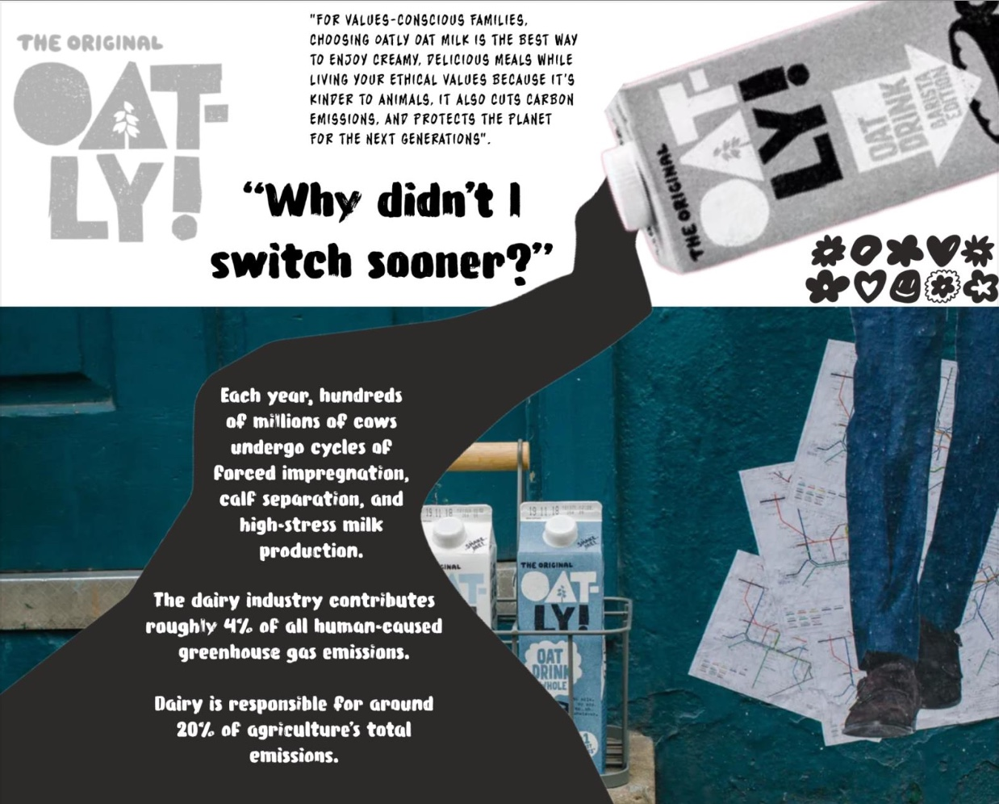
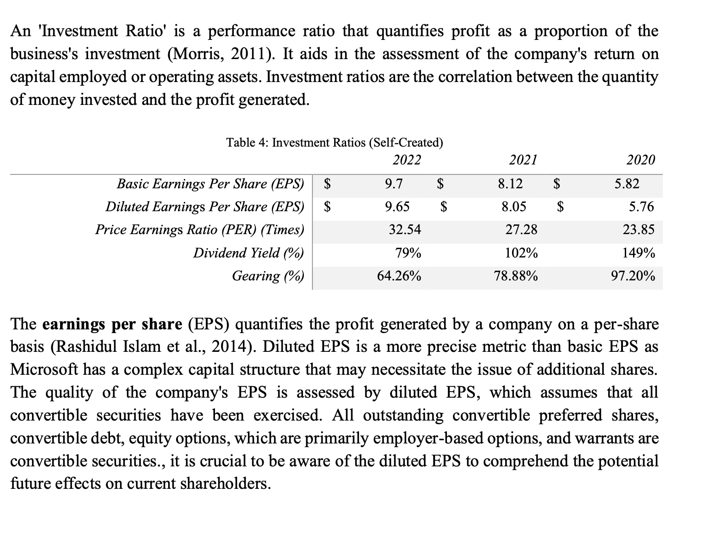
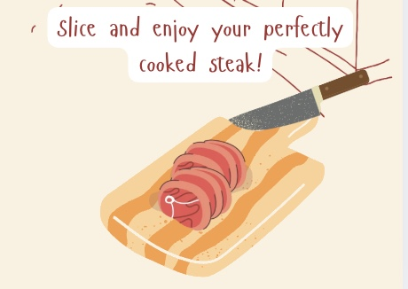

First-class marketing graduate. Global top 13 finalist at CIM The Pitch 2026. Digital Marketing Intern at Savills, driving SEO, GEO, GA4 reporting and email marketing.
Open to graduate and management trainee roles in Vietnam and APAC.
Bilingual Vietnamese and English. Available full time. UK Graduate Visa holder, willing to relocate.
Client dissertation delivered Journal manuscript in progress
12 distinctions at RMIT
Savills thought leadership 3 recently published, more in the pipeline
Selected to mentor CIM The Pitch 2027 teams
a little Greenwich news
In the news
Greenwich marketing students reach the global finals
The University of Greenwich featured our team after we reached the top 13 undergraduate teams worldwide in CIM's The Pitch 2026. The article shares the story behind our IBM campaign, “Be the You, You Imagine.”
I look for the real reason behind what consumers do before I suggest what a brand should do next.
I studied in Vietnam and the UK, so I read audiences through two cultures and pay attention to what changes between them.
I like turning research into clear next steps a team can actually use.
I turn messy information into clear recommendations. Research, writing, data and a little design all sit in my toolkit, and I use AI tools carefully to work faster without losing accuracy.
Research and insight
consumer insights / behavioural science / mixed-methods research / regression and correlation / thematic and sentiment coding / sustainability research
Digital and analytics
SEO / GEO / GA4 / SEMrush / SimilarWeb / Looker Studio / Google Ads Search certified / Meta Business Suite
Content and creative
article and PR writing / HTML publishing / EDM / Salesforce email campaigns / WordPress / Canva / Adobe Express / Photoshop / Illustrator / Premiere Pro / After Effects / Figma
A mix of marketing work, research, mentoring and student leadership, with most of it rooted in understanding people.
Savills, Ho Chi Minh City Office
Digital Marketing Intern | Oct 2026 to Present
Created thought-leadership content and delivered SEO, email marketing and performance reporting for the Marketing and Communications department.
Created English and Vietnamese web content using audience research and SEO. Three recent thought-leadership articles earned 601 search impressions and 11 organic clicks in nine days, with more articles in the publication pipeline. Also wrote five PR articles for Vietnam Industry and Trade Newspaper to support media coverage and backlinks.
Published department content in the company CMS, built HTML landing pages and EDMs in VS Code, and designed Salesforce email campaigns. Photographed a press release event for the marketing team.
Used SEMrush for keyword research, content optimisation and backlink work, audited content against Google's policies, and completed a small keyword research task for Znews.
Built the Q3 2026 GA4 website report and an SEO/GEO report in SEMrush and Looker Studio, turning traffic, engagement, audience, keyword and content visibility data into next steps for the department and project team.
Tools: SEMrush, GA4, Looker Studio, Salesforce, HTML, VS Code, WinSCP

Savills event
Chartered Institute of Marketing, The Pitch 2027, United Kingdom
CIM Competition Mentor (Remote) | Oct 2026 to Present
Invited back to mentor two University of Greenwich teams preparing for The Pitch 2027.
Meet each team weekly to review progress, answer questions and share lessons from my own CIM finalist experience.
Review drafts and give structured feedback on ideas, strategy and presentation.
Consumer Research Consultant (client dissertation project, remote) | Oct 2025 to Present
Managed a 52-participant EV adoption study end to end and translated the findings into client recommendations.
Led a mixed-methods study (n=52) on barriers to EV adoption, from proposal and data collection to analysis, reporting and recommendations. Cleaned and managed quantitative data in Excel and SPSS.
Combined regression and correlation analysis with NVivo thematic and sentiment coding, using primary and secondary research and responsible data practices.
Presented client recommendations to Enterprise Mobility and my supervisor. Earned 75% (First Class); the research is in development for journal submission.
Tools: Excel, SPSS, NVivo, regression, correlation, thematic and sentiment coding
CIM The Pitch 2026, IBM Partner Brief
Campaign Strategist, Team Finalist | Oct 2025 to Mar 2026
Placed in the global top 13 of 155 teams and earned 10/10 for commercial rigour.
Researched SMEs' attitudes to AI and turned the findings into target segments, positioning, messaging and an integrated responsible-AI campaign plan with channels, budget and timeline.
Created campaign assets and the final presentation, then pitched the strategy to IBM and CIM judges. Scored 10/10 for commercial rigour and 8/10 for creative execution, placing top 13 of 155 global university teams.
Led the programme's highest-scoring operations project, earning 88%.
Led a cross-cultural team of five, setting timelines, dividing work and coordinating research under tight deadlines.
Built a commercial and operations model covering demand, supply chain, costs and risk, then recommended scalable growth. Earned 88% (First Class), the programme's highest result.
Oct 2025 to Jul 2026. Represented 100+ students, prioritised feedback for the university and created a clearer escalation route that reduced programme issues and improved course satisfaction.
Marketing Member, Content Writing, RMIT SGS Basketball Club
Oct 2023 to Jun 2024. Wrote Facebook and Instagram content, match highlights and promotions for three tournaments, using performance to refine the content plan.
RMIT International Society | Oct 2022 to Mar 2023. Led five volunteers across finance, marketing, media and sponsors, managing budget and risk to deliver the VND 10 million fundraising target.
GenC The Student Agency
Content Strategist, LinkedIn | 2025 to present
Selected projects
a few things made
Research, campaign thinking and brand work from university projects and competitions.
Seven projects. Click a print to read the full story.

the pitch
IBM x CIM The Pitch 2026
We placed in the top 13 of 155 teams globally and 6th in the final. The strategy scored 10/10 for commercial rigour and 8/10 for creative execution.
10/10 commercial rigour
I researched SMEs' attitudes towards AI and used the findings to shape target segments, positioning and messaging. I developed a responsible AI campaign and integrated go-to-market plan covering creative direction, channels, budget and timeline. I presented the final strategy to IBM and CIM judges.

what changes minds
EV adoption research
The mixed-methods client project earned 75% (First Class) and is being developed for journal publication. I studied barriers to EV adoption with 52 participants using SPSS and NVivo.
75% First Class | n=52
For Enterprise Mobility, I managed the research from proposal and data collection through analysis, reporting and recommendations. I cleaned and analysed quantitative data in Excel and SPSS, then used regression and correlation alongside NVivo thematic and sentiment coding. The findings are now being developed into a journal manuscript.

a brand from scratch
Luméa Optical
I led a student team that took an optical brand from idea to market entry, covering identity, a three-tier range (Core, Purse, Aura), supply chain and costs. It scored the highest in the programme.
88/100, highest in programme
The work covered brand identity, product line architecture, supply chain modelling, cost planning and a market entry strategy. I led a cross-functional team under delivery pressure and connected the brand vision to how the business would actually run, using academic frameworks on a real business structure.

shared spirit
Budweiser: Shared Spirit
I analysed how Budweiser could win back trust after public backlash, using four behavioural science models to explain how customers felt and what would shift their attitude. It was chosen as an exemplar for future students.
80%, cohort exemplar
I used Attitude Theory, the ABC Model, Operant Conditioning and Means-End Chain analysis to map customer motivation, emotional triggers and values. The report also covered audience segmentation, sentiment analysis, value-based positioning and how to judge whether the campaign was working.

small shifts, big habits
Oatly: social and sustainable marketing plan
I wrote a five-year plan to move UK families from dairy to oat milk, using behaviour change theory, values-based segments and a full 4P plan across homes, schools and communities. The work received 80/100 (First Class).
80/100, First Class
The plan targeted environmentally conscious UK families and broke a long-term behaviour change goal into steps a brand could actually run. It shows how I turn consumer psychology into a framework that scales over several years.

reading the numbers
Microsoft x Activision Blizzard
I tested whether the Activision Blizzard acquisition made Microsoft financially stronger or weaker by comparing its position before and after the deal. The analysis received 75% (First Class).
75%, First Class
I analysed the balance sheet, income statement and cash flow, focusing on liquidity, solvency, profitability ratios and changes in capital structure. I compared the before and after figures to reach an evidence-based view on whether the deal worked. It shows I can read financial data and explain it in plain language.

just for fun
SteakTok: app concept
I designed a cooking tracker app concept on my own, from the user problem to the Figma screens. The self-initiated project let me practise product thinking.
Self-initiated, designed in Figma
The app helps people pick their steak doneness, run a timer and follow guided recipe steps. I worked through the whole process myself: user insight, interaction logic, visual hierarchy and the final interface in Figma. I did it outside any course because I wanted to practise product thinking.
Research and writing
still asking questions
I am developing my final-year research into a manuscript with my academic supervisor.
EV adoption manuscript
Mixed-methods study of what stops people adopting electric vehicles, with 52 participants across the UK, US, Hong Kong and Vietnam. Findings point to range anxiety and eco-pride as the strongest predictors.
Manuscript in preparation with my academic supervisor, aiming for submission to JBSSR
Published at Savills
Three website articles covering real estate marketing, the residential market and facility management were recently published. More articles are written and in the pipeline for publication.
I also wrote five PR news articles for a Vietnamese economic newspaper to earn backlinks to the Savills website and support its SEO.
Real estate marketing
The residential market
Facility management
Certificates and awards
little milestones
Google Ads Search CertificationGoogle Skillshop, Jul 2026
Top 13 Global FinalistCIM The Pitch 2026, Mar 2026
AI Skills PassportEY and Microsoft, Jul 2025
Mastering Digital MarketingLondon Business School, Nov 2023
International Scholarship 2024/25University of Greenwich
Inbound Marketing CertificationHubSpot Academy
Content Marketing CertificationHubSpot Academy
Where I learned
and what I took with me
I have studied marketing in Vietnam and the UK, building a perspective shaped by both places.
BA (Hons) Business with Marketing
First Class Honours (76.3%), July 2026. 80+ in operations management, strategy management, creativity and analytics modules. Core modules: Consumer Insights, Consultancy Dissertation, Contemporary Issues in Marketing, Social and Sustainable Marketing. Invited to speak at student transition events about adapting to a new culture and education system.
Short course in digital marketing
London Business School.
Bachelor of Digital Marketing with Entrepreneurship minor
RMIT Vietnam. 2021 to 2023 (transferred). 12 distinctions across 14 modules.
let's talk
Hiring for business, banking, marketing or related roles? I can start full time.